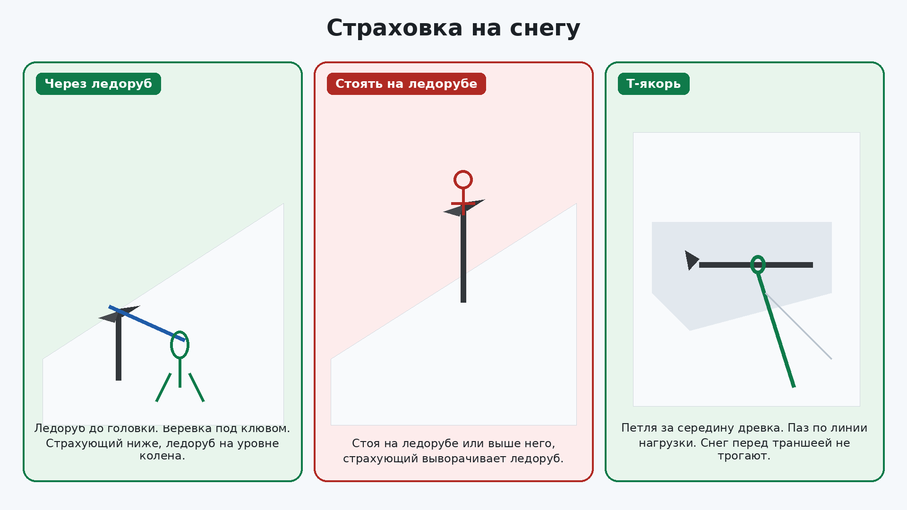

Модуль 9 · Снег, лёд и закрытый ледник
9.2. Страховка на снегу и льду
Черновик для замечаний к тексту и к рисункам. Курс не опубликован и не даёт допуска. Рисунков в уроке: 1, они стоят под текстом.
Вертикальный ледоруб
Быстрая страховка на крутом снежном склоне собирается вокруг ледоруба, вбитого древком. Площадку под него утрамбовывают ногами, древко вгоняют вертикально до самой головки, а верёвку пропускают вокруг древка под клювом, у самой головки, чтобы рывок не сорвал её вверх. Страхующий встаёт лицом к склону ниже ледоруба так, чтобы древко пришлось на уровень колена, и выдаёт верёвку через руки и древко. При рывке он прижимает головку и тормозит трением верёвки о снег и о древко. Схема рассчитана на рывок участника на верхней страховке. Падение лидера с большой высоты она не держит, и именно такое устройство записано в банке аттестации. Инструктор смотрит, дошла ли головка до снега и не стоит ли страхующий выше ледоруба. Ошибка — забить ледоруб клювом, встать на него ногами или оставить его под стопами: древко при этом выворачивается.
Т-якорь, крест и тумба
Станцию на снегу собирают из закопанного ледоруба. Т-якорь — ледоруб, уложенный горизонтально поперёк склона в траншею глубиной от тридцати сантиметров в плотном снегу и глубже в рыхлом, с петлёй за середину древка. Петля за середину распределяет нагрузку по всей длине, которая лежит в траншее. Для петли прорезают выводной паз под углом к поверхности, по линии нагрузки, чтобы тяга не выворачивала ледоруб вверх. Снег перед траншеей не нарушают: именно эта нетронутая подушка принимает нагрузку. Ледорубный крест добавляет упор, когда второго ледоруба вбивают вертикально перед первым. Инструктор смотрит, цела ли подушка перед траншеей и совпал ли паз с будущей тягой. Ошибка — затянуть петлю за темляк или за клюв: нагрузка тогда садится на конец древка и выворачивает якорь из траншеи.
Снежная тумба — столб снега, вокруг которого прорезают кольцевую канаву и обводят верёвку. На спуске её не жалко бросить, потому что в снегу не остаётся железа, но в рыхлом снегу столб делают очень большим, иначе он срезается. Любую снежную точку нагружают плавно и смотрят, что происходит со снегом перед ней. По возможности станцию собирают из двух точек, а не из одной, даже если первая села плотно. Трещины, которые пошли по снегу перед якорем при этой нагрузке, показывают, что якорь выходит. Инструктор не сажает на тумбу человека, пока пробная тяга не прошла без трещин.
Мертвяк и снег, который не держит
Мертвяк — закопанный поперёк предмет, который держит сопротивлением снега перед собой. Металлическую пластину вбивают под углом около сорока пяти градусов к поверхности и наклоняют назад, от направления нагрузки, а трос укладывают в прорезь по линии рывка. При такой посадке пластина под нагрузкой уходит глубже. В рыхлом снегу закапывают то, что есть под рукой: ледоруб, лавинную лопату, рюкзак или мешок, набитый снегом, лыжи. Инструктор смотрит на наклон пластины и на то, что снег перед ней не перекопан лопатой «для удобства». Ошибка — положить пластину плашмя на поверхность или поставить её вертикально тросом вверх: тяга тогда вытаскивает якорь, а не загоняет его в снег. Соседняя ошибка — нарушить снег перед мертвяком траншеей для ног и удивиться, что пластина вышла вместе с рыхлым комком.
Снежная точка держит настолько, насколько крепок снег перед ней. Свежий рыхлый снег почти не держит, поэтому якорь закапывают очень глубоко и делают большим. Мокрый снег, раскисший к полудню, теряет прочность в разы, и станция, которая держала утром, к обеду может не выдержать ту же тягу. Тонкий слой снега на льду не принимает ни ледоруб, ни мертвяк: его прокапывают до льда и ставят ледобуры. Корка над пустым снегом обманчива, а солнце на станции ослабляет её быстро, даже если утром снег был сухим. В плохом снегу копают глубже, ставят две точки или ищут лёд и скалу. Инструктор возвращается к утренней станции после пригрева и смотрит, не поплыл ли снег вокруг петли.
Ледобур
Ледобур — трубчатый винт с острыми зубьями и ушком для карабина. Его сертифицируют по стандарту EN 568. Длина бывает от десяти до двадцати двух сантиметров: короткий винт ставят только в тонкий лёд, для станции берут длинные. Сначала скалывают рыхлый верхний слой до плотного льда. Ледобур вкручивают перпендикулярно поверхности или с небольшим наклоном головки вниз, по направлению нагрузки, и доворачивают до упора, чтобы ушко смотрело по линии рывка. Если лёд кончился раньше, чем винт вошёл целиком, точка не держит, сколько бы ни блестело ушко снаружи. На солнце металл нагревается, и ледобур вытаивает, поэтому его прикрывают снегом, а на длинной станции перекручивают. Инструктор смотрит, сел ли винт туго и не смотрит ли ушко вверх, против будущей тяги.
Петля Абалакова
Петля Абалакова — проушина во льду, которую придумал советский альпинист Виталий Абалаков. Длинным ледобуром сверлят два канала под углом около шестидесяти градусов друг к другу так, чтобы они встретились внутри льда. Через получившуюся проушину крючком протягивают репшнур или стропу и связывают их. В хорошем льду такая точка держит не хуже ледобура, а на спуске во льду оставляют только кусок шнура. Каналы сверлят в плотном льду, подальше от трещин и от края. Чужую петлю, найденную на маршруте, используют только после проверки льда вокруг и самого шнура, а надёжнее сделать новую рядом. Инструктор смотрит, не выходит ли канал на трещину и не выгорел ли чужой шнур. Ошибка — принять любую торчащую из льда петлю за готовую станцию и сесть на неё без осмотра.
Станция во льду и люди на крутом склоне
Станцию во льду делают из двух ледобуров. Их разносят минимум на двадцать сантиметров по высоте и в сторону и не ставят в одну трещину, а связывают петлёй так, чтобы угол между ветвями был не больше шестидесяти градусов. Хороший лёд плотный, голубоватый и однородный: ледобур идёт в нём ровно и туго. Белый пузырчатый лёд и слоистый натёчный держат хуже. В сильный мороз лёд хрупкий и колется звёздами вокруг винта. Пустоты и вода под коркой делают то же самое с уже вкрученной точкой: она сидит в пустоте. Если ледобур пошёл легко или лёд треснул, его переставляют. Инструктор судит о точке по ходу винта, а не по тому, что ушко уже снаружи и в него лезет карабин.
Клиентов по крутому снегу или льду ведут так, чтобы срыв одного не потянул остальных. Надёжный способ — перила. Инструктор проходит участок, натягивает верёвку между двумя станциями, клиенты идут вдоль неё на самостраховке с зажимом или схватывающим узлом и перестёгиваются на станциях по одному. Второй способ — верхняя страховка: инструктор стоит на станции выше и принимает клиентов по очереди. Одновременная связка на крутом склоне без точек между людьми этого не даёт. Удержать сорвавшегося на твёрдом снегу или льду почти невозможно, и срыв одного сдёргивает всех. На таком склоне связка либо идёт со встёгнутыми точками, либо переходит к попеременной страховке и перилам. Инструктор смотрит, есть ли между людьми хоть одна нагруженная точка, прежде чем отпустить их идти вместе.
Этот текст даёт теорию страховки на снегу и льду: установку точек отрабатывают только очно, и чтение не является допуском и не заменяет аттестацию.
Рисунки урока
